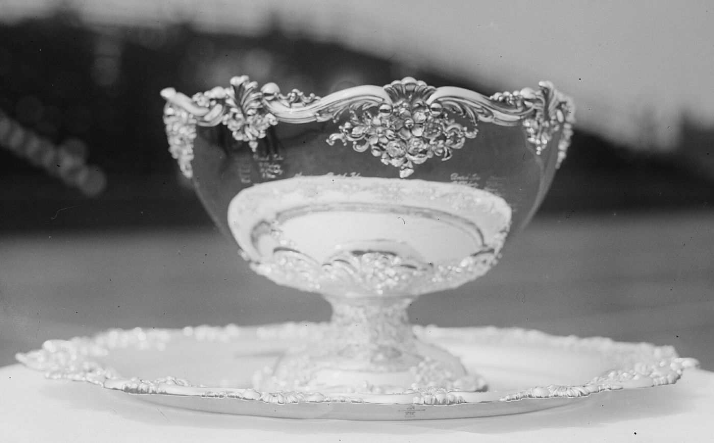
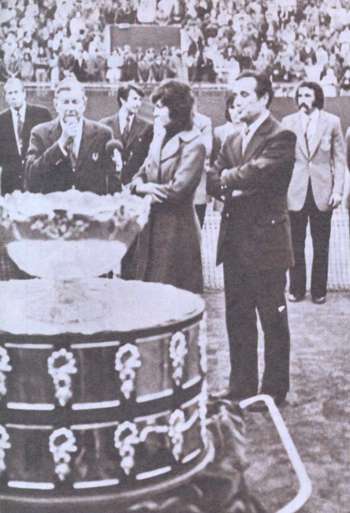
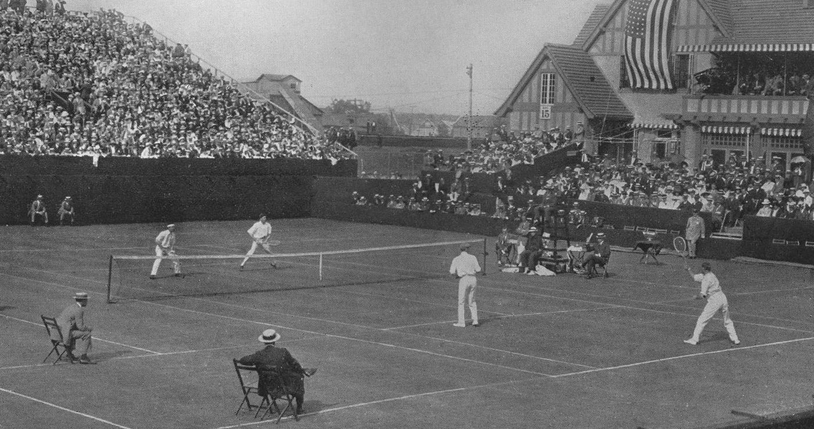
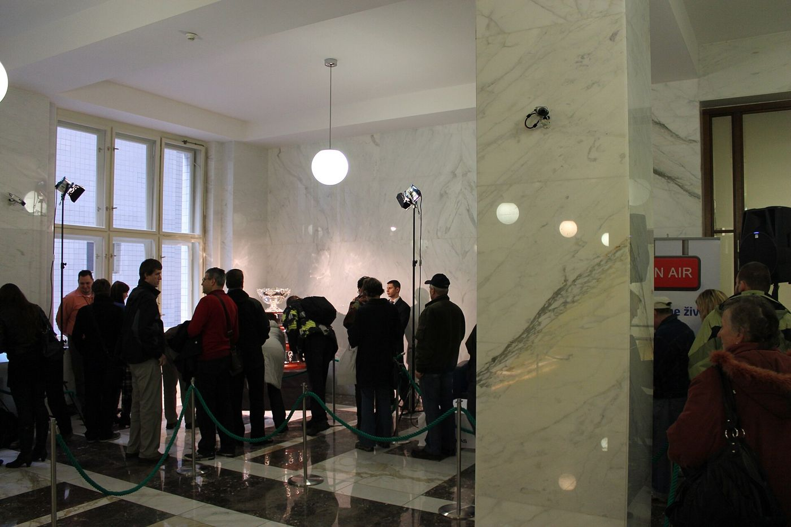
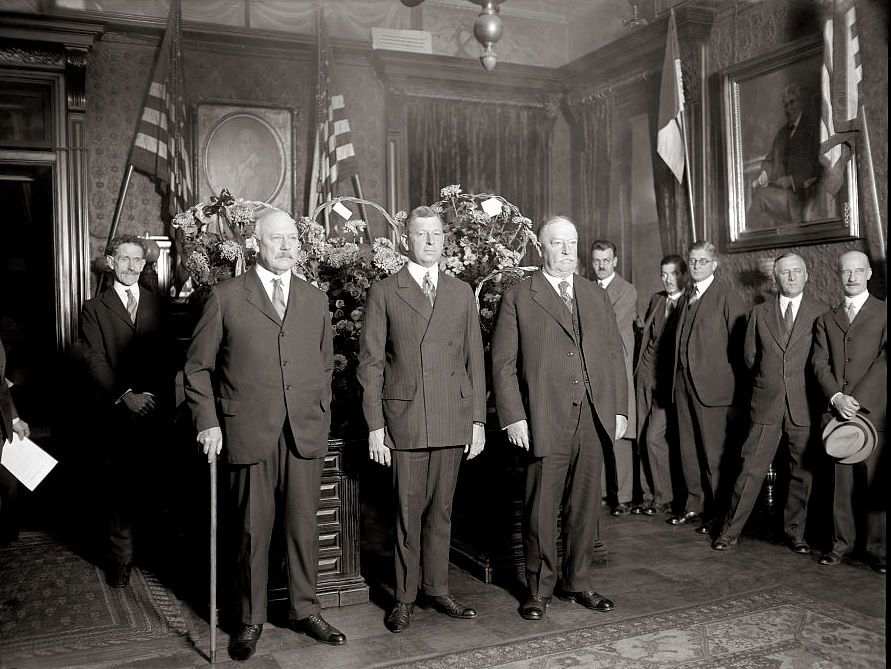
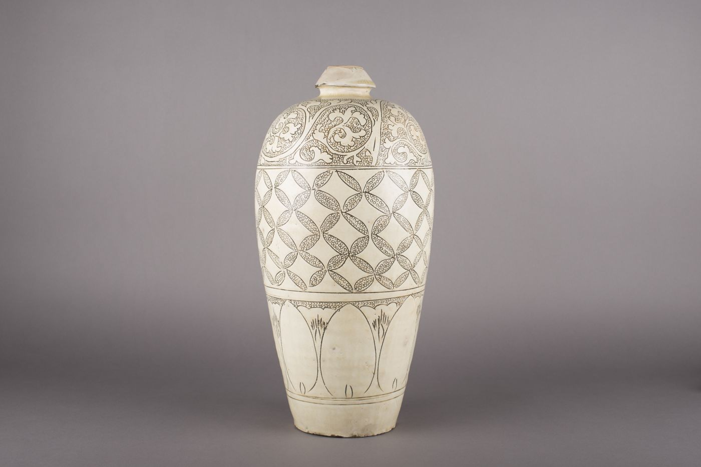
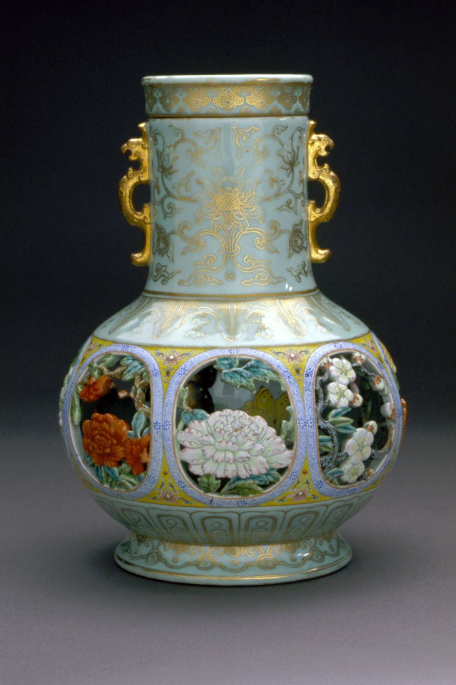

Home / Family History
A St. Louis family and the things it gave away
A dry-goods counter on Market Street, a gated street in the Central West End, a silver bowl, public tennis courts, a museum bequest and a private court on Barnes Road. This page sticks to the public, documented record.
Four generations, briefly
- 1809
Samuel Craft Davis is born in Massachusetts. In St. Louis he builds a dry-goods business on Market Street that trades as far as Nevada, Montana and New Mexico.
- 1871
Samuel C. Davis is born, a son of John Tilden Davis and Maria Filley, daughter of the Filley family of St. Louis. His brother Dwight Filley Davis follows on July 5, 1879.
- 1888
Julius Pitzman plats the Forest Park Addition, the tract that becomes Portland and Westmoreland Places.
- 1893
17 Westmoreland Place is built for John T. Davis, to designs by Peabody, Stearns & Furber.
- 1900
The first Davis Cup tie is played at Longwood, near Boston, August 8–10. The United States beats the British Isles.
- 1904
The World’s Fair and the Olympic Games come to St. Louis. Davis directs the tennis events.
- 1911
Dwight F. Davis becomes Park Commissioner and starts building public tennis courts in Forest Park.
- 1918
Davis serves with the 35th Division in the St. Mihiel and Meuse-Argonne campaigns.
- 1925
Davis is sworn in as Secretary of War on October 14.
- 1929
Davis becomes Governor-General of the Philippines, serving to 1932. In St. Louis, his brother’s indoor court on Barnes Road makes the Sunday paper.
- 1936
Davis marries Pauline Morton Sabin, founder of the Women’s Organization for National Prohibition Reform.
- 1940
Samuel C. Davis dies, leaving his Chinese ceramics to the City Art Museum. Further pieces go to Harvard.
- 1945
Dwight F. Davis dies in Washington on November 28 and is buried at Arlington.
From Market Street to Westmoreland Place
The family fortune began behind a counter. Samuel Craft Davis’s dry-goods house on Market Street supplied a trade that reached deep into the West. His son John Tilden Davis married Maria Jeannette Filley, from a leading Unionist family of the city.
In 1888 the surveyor Julius Pitzman platted the Forest Park Addition on 78 acres north of the park, with deed restrictions that kept houses at least 40 feet from the street. Its two private streets, Portland Place and Westmoreland Place, entered the National Register of Historic Places together in 1974. Westmoreland’s east gates were designed by Eames and Young.
At No. 17, Peabody, Stearns & Furber designed a house for John T. Davis, built in 1893–94. He died in 1894; his son Dwight later lived there for a time.

A punch bowl and a challenge
In 1900 a twenty-year-old St. Louisan bought a silver trophy and invited the world to come and take it from him.
Dwight Davis was a Harvard student and one of the best players in the country when, by his own account, “the idea came to me … that an international competition would be of the greatest possible benefit to the game.” The gift was first announced anonymously. Davis attached conditions: his consent to any change in the rules, and the return of the trophy if no challenge came within five years. The trophy itself was a 217-ounce silver punch bowl, lined with gold according to the International Tennis Hall of Fame.
The challenge came at once. From August 8 to 10, 1900, at the Longwood Cricket Club near Boston, Davis beat Ernest Black of the British Isles in singles, Malcolm Whitman beat Arthur Gore, and Davis and Holcombe Ward won the doubles. The Americans kept the bowl.
The competition outgrew its founder. By 1932, when France held the Cup, the draw was made at the Élysée Palace before the President of the Republic, with Davis in the room. He also came to Roland-Garros that July for the France–United States tie.
“The idea came to me … that an international competition would be of the greatest possible benefit to the game.”Dwight F. Davis, quoted by Robert J. Lake, Sport in American History




This site is not affiliated with the International Tennis Federation or the Davis Cup competition.
One silver bowl, many languages
The trophy from Boston became a household name across Europe and far beyond, each country with its own name for it.
- Le Saladier d’argentFrench
- Salatiera de argintRomanian
- Salátová mísaCzech
- Купа ДейвисBulgarian
- SalataraSerbian and Croatian
- Puchar DavisaPolish
- Davis-kupaHungarian
Within a few years the challenge drew the best players in the world. In August 1902 the British brothers Reggie and Laurie Doherty came to America for it. At the 1914 Challenge Round at Forest Hills, Norman Brookes and Anthony Wilding of Australasia played the American doubles pair of Maurice McLoughlin and Tom Bundy. Within a year Wilding, by then a captain, had been killed at Neuve-Chapelle in France (BBC News).
In France the Cup became le Saladier d’argent, the silver salad bowl. After the French won it in 1927, Paris built the Stade Roland-Garros to defend it (Le Figaro). In November 2012, after the Czech Republic won the Cup, people in Prague lined up at the Czech Radio building just to see it.
The family’s link to the Cup reached behind the Iron Curtain. In October 1972 the United States beat Romania 3–2 in the final in Bucharest. The Romanian magazine Sport photographed Dwight F. Davis Jr. at the final and captioned him as the “son of the initiator and donor of the Silver Salad Bowl” (Sport no. 19, 1972, via Wikimedia Commons).

The 1972 final was played under heavy pressure. Fifty years later Years later the Romanian player Ștefan Georgescu recalled#536;tefan Georgescu recalled that Nicolae Ceaușescu telephoned every day to ask, “How is Ilie feeling, did he sleep well?” (Gazeta Sporturilor, 2022). Stan Smith remembered the American team’s hotel: “We stayed at the Hotel Intercontinental, on the 17th floor, and nobody but us had access to that floor” (Adevărul, 2022). Politics reached the draw as well. In 1976 the Soviet federation refused to play its semifinal against Chile “for political reasons” (El País, September 2, 1976).
In the press, 2017
On June 30, 2017, the Bulgarian site Tennis24.bg reported that “a representative of a legendary tennis family” had arrived in Sofia. The report described John Davis of St. Louis as a member of the Davis family (Tennis24.bg).






This site is not affiliated with the International Tennis Federation or the Davis Cup competition.
Forest Park and the Fair of 1904
“The primary purpose of the park system should be the raising of men and women rather than grass or trees.” Dwight F. Davis, Park Commissioner’s report, 1915.
In 1904 the Louisiana Purchase Exposition filled Forest Park from April 30 to December 1, and the Olympic Games came with it. The tennis was played on dirt courts near Francis Field at Washington University, and Davis directed it. He won the Louisiana Purchase Open singles and, with Ralph McKittrick, the World’s Fair doubles.
Before that he had held a string of civic posts: public baths commissioner, public recreation commissioner, and a seat in the House of Delegates. In 1911 he became Park Commissioner. He worked with the landscape architect George Kessler, took down the “Keep Off The Grass” signs and built 32 public tennis courts. The Dwight Davis Memorial Tennis Center in Forest Park carries his name today.


The War Department and Manila
Davis went to France in 1918 with the 35th Division and served in the St. Mihiel and Meuse-Argonne campaigns. In Washington he became Assistant Secretary and then, on October 14, 1925, Secretary of War.
In 1929 President Hoover sent him to Manila as Governor-General of the Philippines. “My duties will be far away,” he told Time, “but they will, I believe, be interesting.” Manuel L. Quezon later wrote that Davis “was the gentleman personified and was well liked by Filipinos.” Davis’s niece Alita, the tennis champion, sailed out with him.
His first wife, Helen Brooks Davis, died in 1932. In 1936 he married Pauline Morton Sabin, who had founded the Women’s Organization for National Prohibition Reform. In 1942, past sixty, he became director general of the Army Specialist Corps. He died in 1945 and is buried at Arlington.


Samuel C. Davis and the bequest
Dwight’s older brother ran the family estate, served on the art museum’s board and collected Chinese ceramics. In 1940 he left them to the city.
Samuel Craft Davis (1871–1940) left about two hundred pieces of porcelain, along with stone, bronze and lacquer, to what is now the Saint Louis Art Museum, and more than a hundred ceramics to Harvard. The museum’s curator called the collection “almost an epitome of Chinese ceramics.”
One small dish shows how the prices of 1940 have aged. A Northern Song Ru ware dish, appraised for the bequest at $50, is one of a very small number of Ru pieces in the West. It is on view in Gallery 230, with much of the rest of the bequest around it.
All objects shown are from the Saint Louis Art Museum, Bequest of Samuel C. Davis, and are marked public domain by the museum.




The court on Barnes Road
On Sunday, January 13, 1929, the St. Louis Post-Dispatch ran the headline “$60,000 Indoor Tennis Court Built For Girl Champion’s Winter Training.” Mr. and Mrs. Samuel C. Davis had completed an ornate structure for their daughter, Alita, “near Country Club grounds.”
It was a stucco building with a single court and floodlights for night play, on the Davis property on Barnes Road beside the family’s summer cottage. The club’s history calls it “a popular site for tennis parties.” In 1959 the club acquired it. The building still carries the Davis name and is still a private court.
The court was built by Samuel C. and Emma Davis, not by Dwight F. Davis.
Polo, golf and the Davis Estate
The St. Louis Country Club was organized in 1892, when twelve men leased Colliers Farm in Bridgeton to play polo. A Samuel C. Davis appears among the directors of the founding era. In 1895 the club leased about two hundred acres from the Davis Estate for $400 a year, from the brothers Samuel C., Dwight F. and John.
When the club moved again, it chose land at Ladue and Price Roads over offers of Davis land. The course Charles Blair Macdonald designed there opened in 1914 at 400 Barnes Road. It hosted the U.S. Women’s Amateur in 1925 and the U.S. Open in 1947. For that Open the fifth hole was moved onto a raised green that Sam Davis had built at his own expense years before.

Where this comes from
- John W. Davis, The House of Davis, chapters 1–14 and notes, drawing on the St. Louis Country Club centennial history, the St. Louis Post-Dispatch (January 13, 1929) and the Saint Louis Art Museum archives.
- Robert J. Lake, “Exposing the Davis Cup Myth,” Sport in American History, 2018.
- “August 8, 1900: the day the Davis Cup was born,” Tennis Majors.
- International Tennis Hall of Fame, “The Early Years of the Davis Cup Competition,” Google Arts & Culture.
- 1904 Olympic tennis, Olympedia.
- Forest Park Forever, park timeline; Landmarks Association of St. Louis, George Edward Kessler; City of St. Louis, Dwight Davis Park.
- The Cultural Landscape Foundation, Portland Place and Westmoreland Place.
- “The Cabinet: To Manila, Davis,” Time, 1929; Manuel L. Quezon, The Good Fight, chapter VII.
- U.S. Army Center of Military History, Secretaries of War: Dwight Filley Davis (mirror).
- Saint Louis Art Museum, Dish with Everted Rim, 973:1940, and the other bequest objects linked on the credits page; Harvard Art Museums, Bequest of Samuel C. Davis, 1940.210; Christie’s lot essay (bequest of 202 pieces).
- St. Louis Sports Hall of Fame, St. Louis Polo Club; MetGA, Five things to know about St. Louis Country Club.
- Wikimedia Commons, Davis Cup 1972 România–SUA (Sport no. 19, 1972); “La Coupe Davis, une passion française,” Le Figaro; BBC News on Anthony Wilding; Tennis24.bg, June 30, 2017.